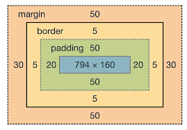

sobre caixas temos 4 elementos fundamentais que formão a caixa
- content(conteudo)
- padding(espaco entre o conteudo e a borda)
- border(borda)
- margin(espaco entre a borda e o proximo elemento)
oque podemos fazer com cada um deles?
- content(conteudo): podemos definir a largura(width) e altura(height) do conteudo em si
- padding(espaco entre o conteudo e a borda): podemos definir o tamanho do padding, ou seja, o espaco entre o conteudo e a borda
- border(borda): podemos definir a largura(border-width), estilo(border-style) e cor(border-color)
- margin(espaco entre a borda e o proximo elemento): podemos definir o tamanho do margin, ou seja, o espaco entre a borda e o proximo elemento
qual a diferença visual entre padding e border?
o padding é o espaco entre o conteudo e a borda, ja a borda é a linha que envolve o conteudo
qual a diferença visual entre border e margin?
a borda é a linha que envolve o conteudo, ja o margin é o espaco entre a borda e o proximo elemento